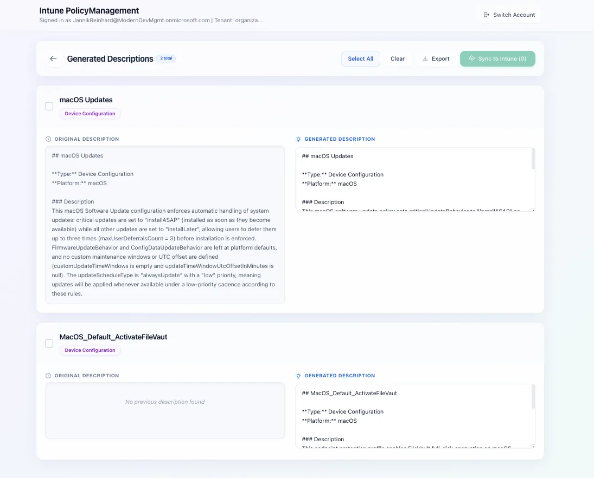

AI-Powered Intune Policy Documentation and Conflict Analysis
If you manage Microsoft Intune at scale, you know the pain: hundreds of policies, most of them with empty or outdated descriptions, and zero visibility into which settings overlap or even contradict each other across policies. Iâve seen this in pretty much every tenant Iâve worked with and honestly, itâs one of the most underestimated operational risks in modern endpoint management. This is where AI-powered Intune policy documentation and conflict analysis comes in.
So I built a tool to fix it. It builds on the same idea I explored in Create your own Intune Co Pilot using Azure OpenAi Studio, but takes it further with automated Intune policy documentation and conflict analysis. Let me walk you through it.

The Problem
Letâs be real, nobody enjoys writing policy descriptions. You create a new Settings Catalog profile, configure 15 settings, assign it, and move on. The description field? Left blank. Maybe you write âWindows Security Settingsâ if youâre feeling generous. That is exactly the gap proper Intune policy documentation is meant to close.
Now multiply that across an enterprise tenant with 200+ policies. When a colleague needs to understand what a policy does, they have to open each one, scroll through every setting, and piece together the intent. Thatâs not documentation, thatâs archaeology.
And then thereâs the conflict problem. You have a Device Configuration profile that sets a password requirement to true, and somewhere in another Compliance Policy, the same setting is configured differently. Nobody notices until users start complaining â or worse, until an audit flags it.
The Solution: Intune PolicyManagement
I built Intune PolicyManagement as a local tool that turns Intune policy documentation from a manual chore into an automated step and does three things:
- Fetches all your Intune policies via the Microsoft Graph API, all 12 policy types, from Device Configuration and Settings Catalog to Endpoint Security, Conditional Access, Autopilot profiles, and even Remediation Scripts.
- Generates meaningful descriptions using Azure OpenAI. The tool sends the complete policy configuration (as JSON) to your Microsoft Foundry deployment and gets back a structured, human-readable description. You see a before/after comparison and can edit the result before pushing it back.
- Analyzes policy conflicts by scanning all policies for overlapping settings. It tells you exactly which settings are configured in multiple policies and whether they conflict (different values) or are just duplicates (same value, multiple places).
How Intune Policy Documentation Works
The architecture is straightforward: a React frontend (Vite + TypeScript + Tailwind CSS) talks to a Python FastAPI backend. The backend handles MSAL authentication, Graph API calls, and Azure OpenAI integration, then turns each policy into clean Intune policy documentation.
Hereâs the flow:
- You sign in with your Microsoft account (interactive browser login via MSAL)
- Click âLoad Policiesâ â the tool fetches all 12 policy types in parallel
- Select the policies you want to describe (individually, filtered, or all at once)
- Hit âGenerateâ â Microsoft Foundry analyzes each policyâs full configuration and creates a description
- Review the before/after comparison, edit if needed
- Push the descriptions back to Intune with one click
For conflict analysis, you switch to the dedicated tab, hit âStart Analysis,â and the tool compares every setting across every policy. Conflicts show up in red, duplicates in amber â with expandable details showing exactly which policies are affected and what values they use.
Supported Policy Types
The tool covers the full spectrum of Intune policy types, so your Intune policy documentation stays complete no matter how the tenant is configured:
- Device Configuration
- Settings Catalog
- Compliance Policies
- App Protection Policies
- Conditional Access
- Endpoint Security
- App Configuration
- Autopilot Deployment Profiles
- Device Enrollment Configurations
- Remediation Scripts
- PowerShell Scripts
- Group Policy (ADMX) including definition values
Why Microsoft Foundry?
I decided to build this on Microsoft Foundry rather than a public API. In enterprise environments, your Intune policy configurations contain sensitive information about your security posture, compliance requirements, and infrastructure setup. Keeping that data within your Azure tenant boundary matters, especially when Intune policy documentation describes how your estate is actually locked down. You can read more about secure model deployments in the official Microsoft Learn documentation for Azure AI Foundry.
The LLM settings (system prompt, output template, custom instructions) are fully customizable through the UI and persist locally. You can tune the output format to match your organizationâs documentation standards.
What I Like About This Approach
Itâs practical. You donât need to change your workflow. Load policies, generate, review, push -> done. A task that would take days manually (writing proper Intune policy documentation for 200 policies) takes minutes.
It finds problems you didnât know you had. The conflict analysis alone is worth the setup. Iâve run this against customer tenants and found dozens of contradicting settings that had been silently causing issues for months.
It runs locally. No cloud service, no SaaS subscription, no data leaving your control beyond Graph API and your own Microsoft Foundry instance. Clone the repo, configure your Microsoft Foundry credentials, and go.
Getting Started
Youâll need:
- Python 3.11â3.13 and Node.js 18+
- Azure CLI installed and logged in
- An Azure OpenAI deployment (e.g., GPT-4o or GPT-5-mini)
- Appropriate Intune permissions (Intune Administrator or equivalent)
Setup is straightforward:
git clone https://github.com/JayRHa/intune-policy-management.git
cd intune-policy-management
# Backend
cd backend
python3.13 -m venv venv
source venv/bin/activate
pip install -r requirements.txt
pip install msal
# Create .env with your Azure OpenAI credentials
cp ../.env.example .env
# Frontend
cd ../frontend
npm installThen start both servers (backend on port 8099, frontend on port 5173) and open http://localhost:5173.
The full installation guide, API reference, and troubleshooting tips are in the GitHub README.
Whatâs Next
This is an open-source project and Iâm actively developing it.
If you have feedback, feature requests, or want to contribute â the repo is open: github.com/JayRHa/intune-policy-management
Wrapping Up: Intune Policy Documentation Made Simple
Good Intune policy documentation isnât glamorous, but itâs essential, for audits, for onboarding, for troubleshooting, and for your own sanity six months from now. And knowing where your policies overlap or conflict is even more critical.
This tool takes the tedious part out of the equation and lets you focus on what actually matters: making informed decisions about your endpoint management strategy, backed by reliable Intune policy documentation.
Give it a try and let me know what you think. If you want to go deeper on the Microsoft Graph side of this, check out my post on the Graph Batch Endpoint.